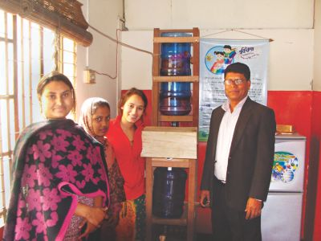

A few months ago I was asked by Competitions Zone to write a piece detailing my advice for young scientists and engineers. I found that the most natural way for me to give advice was to share the story of my journey into science, and pepper the story with what I gained and learned throughout the process. I hope my story is useful for you, and at the very least is an enjoyable read!
What will make you a successful scientist, technologist, engineer, or mathematician? Hard work, tenacity, and passion applied to problems that interest you and make the world a better place. Before I dive into how these character traits manifest themselves throughout the process of problem solving, let me take an aside and tell you about where my journey in science and engineering began.
The sights, sounds, and smells of Dhaka welcomed me to my father’s home country. I was quickly whisked out of the airport and across a colossal boundary wall. This stark divisor separated my aunt’s affluent, gated community from the shanty huts immediately outside. Once within the walls, my innocent attempt to drink a glass of tap water, was met with my aunt’s howling concern, “What are you doing?! You can’t drink that!” I very quickly learned that one sip of water not provided by my aunt would make an Imodium tablet my best friend. The safety I gained living behind the guarded, boundary wall was a mirage; nothing could prevent problems from entering our home through the water supply.
The next morning, when I ventured across the wall, I was intrigued by visible paradoxes. The children had sunken faces, yet smiled brightly. They drank “untreated” water, yet appeared healthy.
My father watched my perplexed reaction to these children and turned our vacation into a rude awakening. He arranged a tour of Sajida Foundation’s daycare centers for orphans and children in need. Every child I met had a unique story of trials, tribulations, and eternal optimism. Of all the stories, Kajol and Amina’s imprinted within my mind; their destitute mother worked back-breaking hours but could not provide enough for her children. Just like every child at the daycare, Kajol and Amina contracted diarrhea and cholera from the water. As I offered lollipops to the children, I struggled to internalize the naked differences between my comfortable life in America and their daily struggles. Despite this extreme disparity, I felt a natural bond with Kajol and Amina.
I internalized their sufferings and decided to find a way to inexpensively purify their water. Reaching out to Dr. Jalil, a professor at Dhaka University, I began understanding how people contracted waterborne diseases. His insights drove me to test the water quality in twenty-four locations around Dhaka. Throughout my field research, I was horrified by the dehumanizing living conditions millions of people suffered through. I could not return to my life of relative abundance without being fazed by the brutal poverty I witnessed.

Once back in America, I quickly realized that my worst day was infinitely more comfortable when compared to Kajol and Amina’s best day. I found solace in developing my water purification system, and analyzing the hundreds of data points I collected in Dhaka. I realized the rich and poor drank the same water, but the less privileged families could not afford to buy a water purifier. Balancing the monetary constraints of people like Kajol and Amina’s mother with the functional requirements to meet the local context of Dhaka, I built a twenty-five dollar, solar-powered, water purification system.
The most valuable aspect of my water purification project, which later propelled me to being a Google Science Fair Finalist and Scientific American Science in Action Finalist, was the inspiration behind what my purification system was attempting to do. The vision of giving children access to clean drinking water by utilizing science and engineering was more crucial to my growth as a scientist and engineer than the literature reviews I conducted, experiments I ran, or prototypes I built. In addition, the goal of helping people meant that when I did not understand a paper, or an experiment failed, or a prototype broke I did not give up. In fact I could not give up, because there were people in the world who depended on my system working. Kajol, Amina, and all of the other children I met fueled my passion and pushed me to be tenacious and work harder.

My project was not motivated by the next deadline for Intel ISEF, Google Science Fair, or the Davidson Fellows Program. Those deadlines do matter and should be strived for, but the motivation for your work should never be for the recognition. Your goals should be to gain knowledge and to solve the problems that hopefully impact people’s lives. My passion to provide clean drinking water meant that when Google Science Fair concluded, my work was still not done. I went back to Bangladesh and partnered with Sajida Foundation, to put my water purification devices in the same daycares I visited during my first trip to Dhaka.

There are problems begging for STEM solutions everywhere you look. You certainly do not need to travel the globe to find noble causes that you have the capacity to be passionate about and contribute to. Throughout my numerous science and engineering projects, I have picked up a few pieces of wisdom that will hopefully expedite the trials you will inevitably face during your own scientific journey.
First, there are resources everywhere to help you. That can manifest itself as online classes to learn the skills you do not yet have, or teachers that would love to help you learn. Second, you have to be the one to unashamedly ask for guidance or help when you need it. No one will be able to help you if they do not know that you need help. Lastly, your ability to pursue your goals comes from your internal drive. You have to be hard working, tenacious, and passionate about the problems that you hope to solve, and if you pick a problem impacting others’ lives making it through the rough days when everything breaks may make getting back up a little easier.
If you like my content let me know, by tweeting or subscribing below!